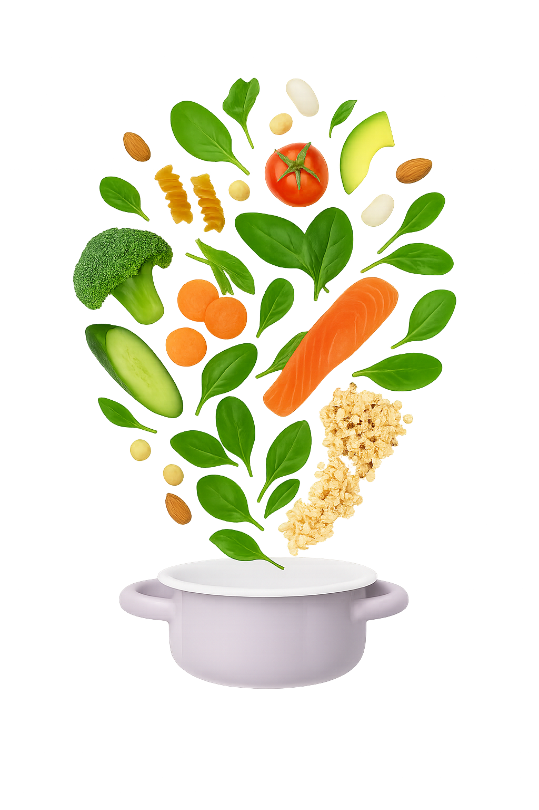

תזונה מאוזנת - הבסיס לחיים באיזון
פירמידת המזון
פירמידת המזון היא דרך פשוטה להבין מה הגוף צריך וכמה מכל דבר

למעלה: מוצרי חלב שומניים, שמנים, חטיפים ומתוקים
באמצע: חלבונים טובים כמו קטניות, ביצים, עוף ודגים
בתחתית: ירקות, פירות ודגנים מלאים. הבסיס היומי שלך
טיפים לתזונה נכונה ומאוזנת
עקבי אחר הטיפים שלנו וגלי כמה זה פשוט
שלבו ירקות בכל ארוחה – טריים, מבושלים או בתנור. צבעים שווה ערכים תזונתיים מגוונים.
שלבו חלבונים איכותיים – כמו קטניות, ביצים, דגים, עוף, טופו או גבינות.
שתו מספיק מים – לפחות 8 כוסות ביום. לפעמים צמא מרגיש כמו רעב.
העדיפו מזון לא מעובד – מקור אוכל טבעי מזין יותר מחטיפים, מאפים וקפואים תעשייתיים.
האזינו לגוף שלכם – אכלו כשאתם רעבים, וכאשר אתם מרגישים שבעים, עצרו.
אכלו לאט ובנוכחות – כשאוכלים בלי הסחות דעת, נהנים יותר ושמים לב לכמות.
שמרו על איזון – אין צורך להיות קיצוניים. גם פינוק מדי פעם הוא חלק מתזונה נכונה.
